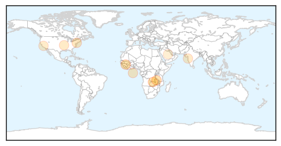
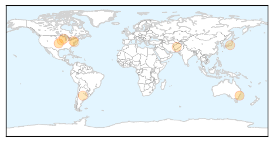

Meningitis
30-Day Web Trend
3 alerts, 0 warnings

30-Day Twitter Trend
0 alerts, 0 warnings

Article Locations
Article Confidences

Top Articles:
- 0.971
- Quarantine rules for Haj pilgrims unveiled
- 0.962
- The Post
- 0.936
- Kabompo school meningitis outbreak mishandled
- 0.756
- Guidance on new meningitis vaccine leaves choice to parents; • Experts disagree on who should be able to receive the vaccine
- 0.717
- Hand, Foot and Mouth Disease
- 0.660
- Brain-Eating Amoebas Have Struck Again in Minnesota
- 0.639
- We need to early diagnose TB and treat with drugs that work
- 0.623
- DonutGate 2015: Ariana Grande's Donut-Licking Incident Was Gross, But Is It Really A Public Health Concern?
- 0.513
- Meningitis vaccination mandatory for Haj visa
Top Tweets:
-
No tweets found for Jul 09, 2015
Influenza
30-Day Web Trend
1 alerts, 0 warnings

30-Day Twitter Trend
0 alerts, 0 warnings

Article Locations
Article Confidences

Top Articles:
- 0.973
- www.cowracommunitynews.com
- 0.949
- Discovery points to a new path toward a universal flu vaccine
- 0.751
- July 8, 2015 Archives
- 0.751
- July 8, 2015 Archives
- 0.751
- July 8, 2015 Archives
- 0.751
- July 8, 2015 Archives
- 0.751
- July 8, 2015 Archives
- 0.726
- US Senate Meeting Highlights Dramatic Impact of Avian Flu
- 0.706
- USDA grapples with 'largest animal health emergency'
- 0.648
- Avian Flu Impacting U.S. Poultry Industry
- 0.605
- Dire bird flu talk at Carper hearing
Top Tweets:
-
No tweets found for Jul 09, 2015